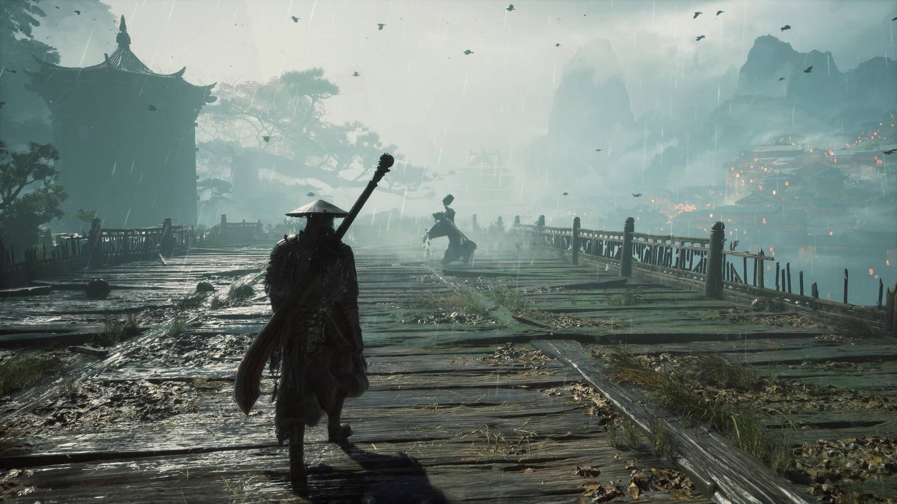

Gaming · 26 Oct 2026
Phantom Blade Zero Reviews Just Beat Every Soulslike In 2026

Phantom Blade Zero reviews put the Wuxia-inspired action game from S-Game in pole position as one of Metacritic's best-rated 2026 games.
Multiple independent publishers are reporting on the same development: Phantom Blade Zero Reviews Just Beat Every Soulslike In 2026.
The available reports place the development in the Gaming category. The accounts were compared for agreement on the central event rather than simply shared names or broad topics.
One of the available reports describes the development this way: Phantom Blade Zero reviews put the Wuxia-inspired action game from S-Game in pole position as one of Metacritic's best-rated 2026 games.
Readers should consult the linked source reports for additional context, updates and details that may change as the story develops.
Sources
This article was produced by the C. O. Eric AI Newsroom from the cited sources. It is published only after automated evidence and safety checks.